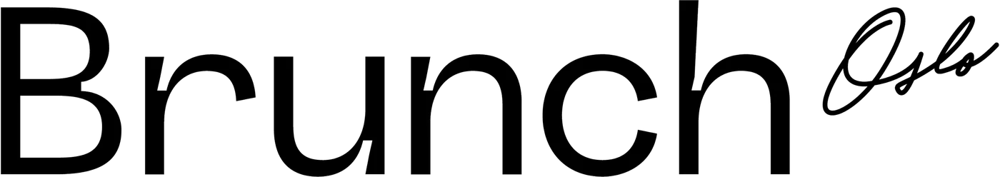

Kva er ei hjertesak?
Saker med noko på spel
Byrået har eigen seksjon for hjertesaker — oppdrag der bodskapen betyr meir enn merkevara.
SAIH
Oppression Magazine
Magasin som set søkelys på undertrykking.
SAIH
Deepfake-Influencers
Kampanje om falske profilars makt.
Forut
Siv og Erna stilt til veggs i Uganda
Kampanje for Forut.
Matsentralen
Matsvinn
Kampanje mot matsvinn.
Kvifor
Bodskap som betyr noko
Når saka er viktig, er det ekstra viktig at bodskapen blir forstått. Vi brukar same hantverk på hjertesaker som på kommersielle kampanjar — berre med eit anna mål.
- Organisasjonar og formål
- Kampanje med bodskap
- Innhald som blir hugsa

Har de ei hjertesak?
Ta kontakt, så ser vi kva vi kan gjere.